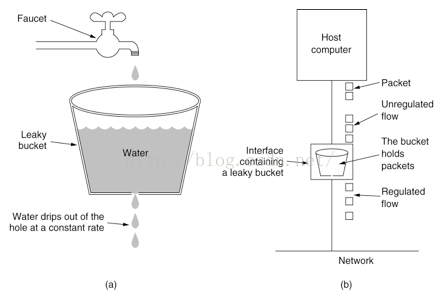
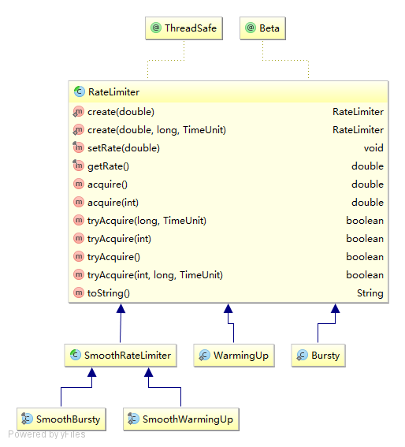

在开发高并发系统时有三把利器用来保护系统：
缓存、降级和限流。缓存的目的是提升系统访问速度和增大系统能处理的容量，可谓是抗高并发流量的银弹；
降级是当服务出问题或者影响到核心流程的性能则需要暂时屏蔽掉，待高峰或者问题解决后再打开；而有些场景并不能用缓存和降级来解决，比如稀缺资源（秒杀、抢购）、写服务（如评论、下单）、频繁的复杂查询（评论的最后几页），因此需有一种手段来限制这些场景的并发 / 请求量，即限流。
限流的目的是通过对并发访问 / 请求进行限速或者一个时间窗口内的的请求进行限速来保护系统，一旦达到限制速率则可以拒绝服务（定向到错误页或告知资源没有了）、排队或等待（比如秒杀、评论、下单）、降级（返回兜底数据或默认数据，如商品详情页库存默认有货）。
一般开发高并发系统常见的限流有：限制总并发数（比如数据库连接池、线程池）、限制瞬时并发数（如 nginx 的 limit_conn 模块，用来限制瞬时并发连接数）、限制时间窗口内的平均速率（如 Guava 的 RateLimiter 、 nginx 的 limit_req 模块，限制每秒的平均速率）；其他还有如限制远程接口调用速率、限制 MQ 的消费速率。另外还可以根据网络连接数、网络流量、 CPU 或内存负载等来限流。
先有缓存这个银弹，后有限流来应对 618 、双十一高并发流量，在处理高并发问题上可以说是如虎添翼，不用担心瞬间流量导致系统挂掉或雪崩，最终做到有损服务而不是不服务；限流需要评估好，不可乱用，否则会正常流量出现一些奇怪的问题而导致用户抱怨。
限流算法
常见的限流算法有漏桶算法和令牌桶算法。
漏桶算法
漏桶(Leaky Bucket)算法思路很简单。请求先进入到漏桶里，漏桶以一定的速度出水，请求流量过大会直接溢出。
漏桶算法可以保证下行流量的速率。

令牌桶算法
令牌桶算法(Token Bucket)是按照固定速率往桶中添加令牌，请求是否被处理需要看桶中令牌是否足够，当令牌数减为零时则拒绝新的请求；
令牌桶和漏桶对比
- 漏桶限制的是常量流出速率（即流出速率是一个固定常量值，比如都是1的速率流出，而不能一次是1，下次又是2），从而平滑突发流入速率；
- 令牌桶允许一定程度的突发，而漏桶主要目的是平滑流入速率；
guava实现的令牌桶算法RateLimiter

分布式限流
分布式限流最关键的是要将限流服务做成原子化，而解决方案可以使使用 redis+lua或者 nginx+lua 技术进行实现，通过这两种技术可以实现的高并发和高性能。
首先我们来使用 redis+lua 实现时间窗内某个接口的请求数限流，实现了该功能后可以改造为限流总并发 / 请求数和限制总资源数。 Lua 本身就是一种编程语言，也可以使用它实现复杂的令牌桶或漏桶算法。
限制并发数Semaphore
Semaphore（信号量）是用来控制同时访问特定资源的线程数量，它通过协调各个线程，以保证合理的使用公共资源。
Semaphore可以用于做流量控制，特别公用资源有限的应用场景，比如数据库连接。假如有一个需求，要读取几万个文件的数据，因为都是IO密集型任务，我们可以启动几十个线程并发的读取，但是如果读到内存后，还需要存储到数据库中，而数据库的连接数只有10个，这时我们必须控制只有十个线程同时获取数据库连接保存数据，否则会报错无法获取数据库连接。
后记
后续再补充吧